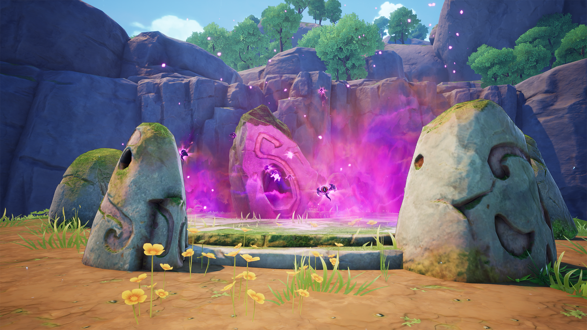
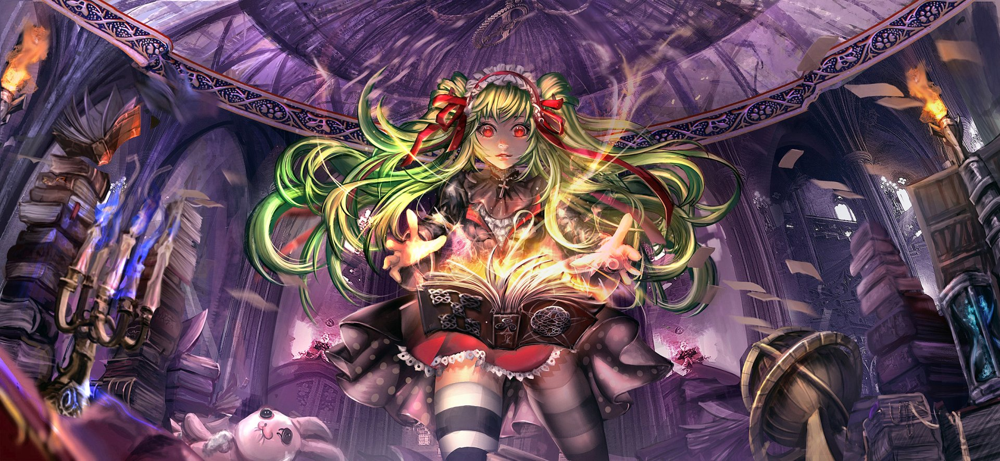
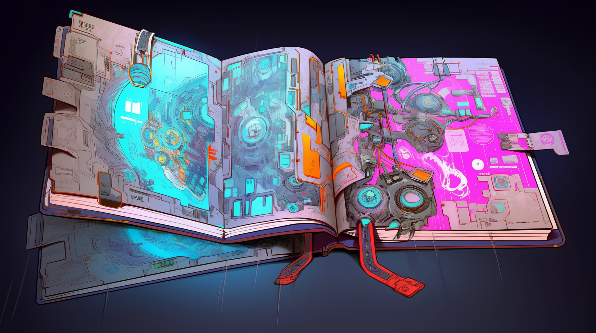
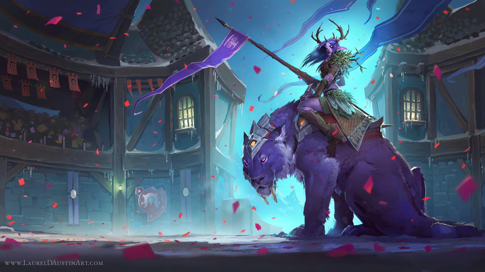

Inscripciones Arcanas
¿Quieres echar un vistazo a las runas que tenemos preparadas para ti? Cada una guarda un misterio único, esperando ser descifrado por un verdadero invocador. ¡Atrévete a explorar su poder y descubre cuál resonará contigo!
Más información
 Talismanes de Poder
Talismanes de Poder

¿Te gustaría descubrir los talismanes que hemos preparado para ti? Cada uno está cargado de energía ancestral y diseñado para complementar tus habilidades. Elige con sabiduría y deja que su poder te guíe en tu aventura.
Más información
Certificados de Heroe
¿Qué es el Certificado del Héroe? Es mucho más que un reconocimiento: simboliza el final de un camino lleno de aprendizaje, desafíos y transformación. Descubre cómo obtener el tuyo y da el último paso para convertirte en una leyenda. ¡Entra e infórmate!
Más información
Documentos del Viajero

¿Quieres saber más sobre nuestro centro? Descubre todo lo que tenemos preparado para ti: nuestras instalaciones, las disciplinas que podrás aprender y cómo nos organizamos para garantizar tu formación como futuro héroe.
Más información
 Alianza de Maestros
Alianza de Maestros
¿Quieres elegir ya tu alianza? En el Jardín de Balamb te esperan caminos únicos llenos de desafíos y recompensas. Descubre aquí las alianzas disponibles y elige la que mejor se alinee con tu destino.
 Más información